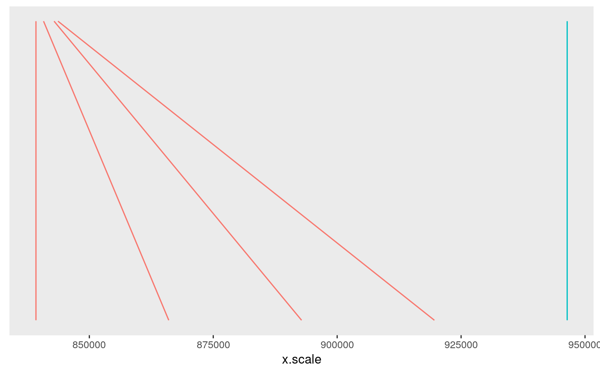

Plotting functions in GUESSFM
Chris Wallace
�r Sys.Date()
plotting.RmdGUESSFM Plotting
Some example data
Let’s start with the data from the main vignette (GUESSFM Introduction):
library(GUESSFM)## Warning: replacing previous import 'data.table::melt' by 'reshape::melt'
## when loading 'GUESSFM'mydir <- system.file("extdata",package="GUESSFM")
(load(file.path(mydir,"simdata.RData")))## [1] "X" "Y" "tags" "d" "dx" "sm" "sp"Prior/posterior number of SNPs in the model
The prior for each model is dependent only on the number of SNPs it contains. It is a beta-binomial model, and you need specify only the mean and overdispersion (variance relative to binomial) of this distrubtion.
n<-100 # 100 SNPs in region
x <- 1:10 # consider prior for up to 10 causal SNPs
xbar <- 3 # expect around 3 causal
## a binomial prior
y <- snpprior(x, n, xbar)
plot(x, y, type="h")
## is equivalent to
y1.0 <- snpprior(x, n, xbar, overdispersion=1.0)
points(x, y1.0, col="red")
##larger values of overdispersion change the distribution:
y1.1 <- snpprior(x, n, xbar, overdispersion=1.1)
y1.5 <- snpprior(x, n, xbar, overdispersion=1.5)
y2.0 <- snpprior(x, n, xbar, overdispersion=2.0)
points(x, y1.1, col="orange")
points(x, y1.5, col="pink")
points(x, y2.0, col="green")pp.nsnp calculates a posterior distribution for the number of causal SNPs in the region, and with an argument plot=TRUE will also plot the distribution. If you supply the prior expected number of causal SNPs, you can compare the posterior to the prior.
pp.nsnp(d,plot=TRUE)## $trait
## 0 1 2 3 4
## 6.352132e-46 2.209605e-10 6.593048e-01 2.883969e-01 4.923457e-02
## 5 6 7
## 3.049965e-03 1.367187e-05 4.553833e-08pp <- pp.nsnp(d,plot=TRUE,expected=3)So that’s quite nice. We had a vague-ish prior, spreading the prior weight across 0-7 SNP models, with an expected number of causal variants set at 3. We simulated data with two causal variants, and the posterior is peaked on 2 SNPs, with some weight on 3-4 SNPs.
The second time, we stored an underlying pp.nsnp object in pp. We can check a couple of quality control measures on this. Our priors are left skewed and unimodal, and so should our posteriors be:
qc(pp)## trait skewness nmodes flag
## trait trait 1.318454 1 FALSESNP groups
In the introduction vignette, we formed a snppicker object, sp. We can extract the SNP groups from this and use it to generate a useful summary object
groups <- as(sp,"groups")
groups## groups object, containing 5 SNPs in 2 groups.library(snpStats)## Loading required package: survival## Loading required package: Matrixdata(for.exercise, package="snpStats") # for SNP information
summx <- guess.summ(sm,groups=groups,snps=snp.support,position="position")
summx <- scalepos(summx,position="position")
library(ggplot2)
signals <- signal.plot(summx)
signalssnps <- ggsnp(summx)
snpslds <- ggld(X, summx)
lds
chr <- ggchr(summx)
chr
Individually, perhaps only the signals plot is useful, which shows us two groups of SNPs which together have joint gMPPI close to 1. The red one contains four SNPs, and the blue group 1. The other tracks are useful to put this into some context. snps labels the SNPs, lds plots the r2 between pairs of SNPs. Grouped SNPs are ordered so SNPs in the same group are together, but this is unlikley to reflect chromosome position. chr is a plot of linking the group position to the chromosome position.
If you have ggbio installed, then this function will line up the above plots
library(ggbio)
tracks(chr,signals,snps,lds,heights=c(1,3,1,2))img
This sort of thing can be useful if you have other tracks (eg, functional information) you want to line up.
Patterns of SNPs selected
It can be helpful to see which groups of SNPs are selected together in models, or never together. If groups of SNPs are never selected together, then they maybe alternative explanations for the phenotype but do not jointly explain for of the variance than either set alone. Sometimes, this means snp.picker has failed to group SNPs properly, and these groups should be combined. You can inspect whether this might be helpful using check.merge() and use groups.merge() to do the merge.
pattern.plot(SM=sm,groups=groups)